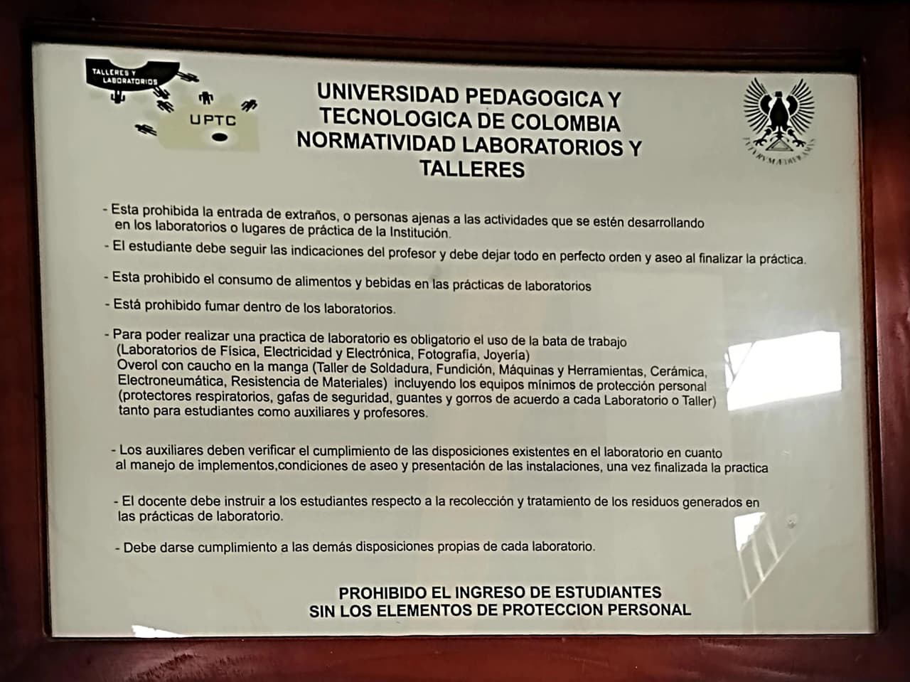

LICENCIATURA EN TECNOLOGÍA
LICENCIATURA EN TECNOLOGÍA
Normatividad de Ingreso y Permanencia


Para ingresar
- Presentar el carné estudiantil vigente.
- Estar inscrito en la práctica o contar con autorización del docente o del encargado.
- Llegar puntual dentro del horario asignado; sin docente no se ingresa.
- Dejar bolsos y objetos personales en el lugar indicado.
Elementos de protección
- Overol o bata y calzado cerrado de seguridad.
- Gafas de protección y guantes según el taller.
- Protección auditiva y careta en soldadura, torno y fresadora.
- Cabello recogido; sin anillos, cadenas ni ropa suelta.
Durante la práctica
- Seguir las instrucciones del docente y las guías de trabajo.
- Usar cada máquina solo después de recibir la inducción.
- Reportar de inmediato cualquier daño, accidente o falla.
- Mantener el puesto limpio y devolver las herramientas.
Prohibido
- Ingresar con comida, bebidas o bajo efectos de alcohol o sustancias.
- Usar celular o auriculares mientras se opera una máquina.
- Operar equipos sin autorización o trabajar solo.
- Sacar herramientas o materiales del taller.
Volver al menú principal